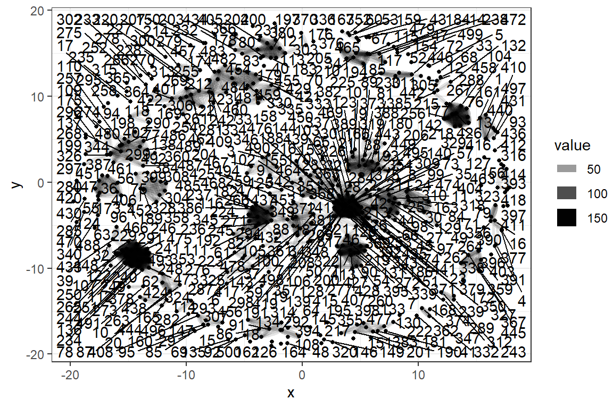

第 15 章 耦合
可以包含 这里主要参考了 Aria, M. & Cuccurullo, C. (2017). bibliometrix: An R-tool for comprehensive science mapping analysis, Journal of Informetrics, 11(4), pp 959-975, Elsevier, DOI: 10.1016/j.joi.2017.08.007 (link) M.J. Cobo, A.G. López‐Herrera, E. Herrera‐Viedm,a F. Herrera (2011). Science mapping software tools: Review, analysis, and cooperative study among tools, JOURNAL OF THE AMERICAN SOCIETY FOR INFORMATION SCIENCE AND TECHNOLOGY, 62(7):1382–1402
15.1 Bibliographic coupling

Converting your isi collection into a bibliographic dataframe
## [1] "PT" "AU" "BA" "BE" "GP" "AF" "BF" "CA" "TI" "SO"
## [11] "SE" "BS" "LA" "DT" "CT" "CY" "CL" "SP" "HO" "DE"
## [21] "ID" "AB" "C1" "RP" "EM" "RI" "OI" "FU" "FX" "CR"
## [31] "NR" "TC" "Z9" "U1" "U2" "PU" "PI" "PA" "SN" "EI"
## [41] "BN" "J9" "JI" "PD" "PY" "VL" "IS" "PN" "SU" "SI"
## [51] "MA" "BP" "EP" "AR" "DI" "D2" "EA" "EY" "PG" "WC"
## [61] "SC" "GA" "UT" "PM" "OA" "HC" "HP" "DA"预处理非常必要
scient_df33 <- scient_df3 %>%
as.data.frame() %>%
mutate_all(funs(str_replace_all(., "\\s+", " "))) %>%
mutate(UT = str_replace(UT, "WOS:", "ISI")) %>%
mutate(DB = "ISI", ER = "") %>%
mutate_if( is_character, str_to_upper) %>%
mutate_all(as.character) %>%
mutate_at(vars(PY), as.numeric) %>%
mutate(AU =
str_replace_all(AU, c("," = " ", "\\." = "", "\\s+" = " ") ) %>% str_trim()
)如果做（文章与参考文献的耦合），不应该把作者unnest()
tb <- scient_df33 %>% select(AU, CR) %>%
#slice(1:10) %>%
mutate(id = row_number()) %>%
transform(
#AU = str_split(AU, "; ") %>% map(unique),
CR = str_split(CR, "; ")
) %>%
#unnest(AU, .drop = FALSE) %>%
unnest(CR, .drop = FALSE) %>%
mutate(CRlist = str_split(CR, ",") %>% map(unique)) %>%
mutate(length = map_int(CRlist, ~ length(.)) ) %>%
filter(length > 3 ) %>%
mutate(fisrt = map_chr(CRlist, ~ first(.)) %>% map_chr(str_trim),
Year = if_else(length > 3, map_chr(CRlist, 2), "NA"),
SO = if_else(length > 3, map_chr(CRlist, 3), "NA") %>% map_chr(str_trim)
) %>%
mutate(DOI = str_extract(CR, "DOI\\s+([^,]*)") %>% str_replace("\\[", "")) %>%
filter(!is.na(DOI))## Observations: 15,611
## Variables: 9
## $ AU <chr> "QIAN Z; ZHAO MM; HOU BP; ZHAO YH",...
## $ CR <chr> "AGARWAL GS, 2010, PHYS REV A, V81,...
## $ id <int> 1, 1, 1, 1, 1, 1, 1, 1, 1, 1, 1, 1,...
## $ CRlist <list> [<"AGARWAL GS", " 2010", " PHYS RE...
## $ length <int> 5, 6, 7, 5, 5, 5, 5, 5, 6, 7, 7, 5,...
## $ fisrt <chr> "AGARWAL GS", "ASPELMEYER M", "BAGH...
## $ Year <chr> " 2010", " 2014", " 2011", " 2016",...
## $ SO <chr> "PHYS REV A", "REV MOD PHYS", "NAT ...
## $ DOI <chr> "DOI 10.1103/PHYSREVA.81.041803", "...稀疏矩阵太大，还是用tidy大法好
相当于矩阵转置
计算 \(C = A \times A^t\)
rs <- dummy_sparse %>%
inner_join(dummy_sparse_t, by = c("column" = "row")) %>%
# take the row id from the first matrix, column id from the second
group_by(row, column = column.y) %>%
# and calculate dot products
summarise(value = sum(value.x * value.y)) #%>%
# use spread to convert back to a dense representation
#spread(column, value, fill = 0)
rslibrary(tidygraph)
library(igraph)
library(ggraph)
rs %>%
as_tbl_graph() %>%
ggraph(layout = 'kk') +
geom_edge_fan(aes(edge_alpha = value, edge_width = value)) +
geom_node_point(size = 1) +
geom_node_text(aes(label = name), repel = TRUE,
point.padding = unit(0.2, "lines")) 
15.2 用sicnu_set看看吧
## Observations: 1,644
## Variables: 24
## $ University <chr> "Sichuan_Normal_Univ", "Si...
## $ University_cn <chr> "四川师范大学", "四川师范大学", "四川师范大...
## $ AU <chr> "Chen, ZJ; Xu, GB; Yan, JG...
## $ AF <chr> "Chen, Z. J.; Xu, G. B.; Y...
## $ SO <chr> "Journal Of Applied Physic...
## $ DE <chr> NA, NA, NA, "Main eigenval...
## $ C1 <chr> "[Chen, Z. J.; Xu, G. B.; ...
## $ RP <chr> "Chen, ZJ (reprint author)...
## $ FU <chr> "National research project...
## $ CR <lgl> NA, NA, NA, NA, NA, NA, NA...
## $ TC <dbl> 0, 0, 0, 0, 3, 2, 0, 0, 8,...
## $ ISSN <chr> "0021-8979", "0020-1669", ...
## $ PY <dbl> 2016, 2016, 2016, 2016, 20...
## $ UT <chr> "WOS:000391685500028", "WO...
## $ Full_title <chr> "JOURNAL OF APPLIED PHYSIC...
## $ Category_ESI <chr> "PHYSICS", "CHEMISTRY", "M...
## $ Category_ESI_cn <chr> "物理学", "化学", "综合交叉学科", "数学...
## $ Category_CAS <chr> "物理", "化学", "生物", "数学", "工...
## $ Degree_CAS <int> 3, 2, 3, 3, 1, 3, 4, 4, 4,...
## $ Title <chr> NA, NA, NA, NA, NA, NA, "物...
## $ is_chinese <dbl> 0, 0, 0, 0, 0, 0, 1, 0, 0,...
## $ Cites <dbl> 160969, 92336, 582877, 100...
## $ ImpactFactor <dbl> 2.176, 4.700, 2.766, 0.972...
## $ Eigenfactor <dbl> 0.14358, 0.10188, 1.86235,...CR 为空，更新complete_set数据后再做